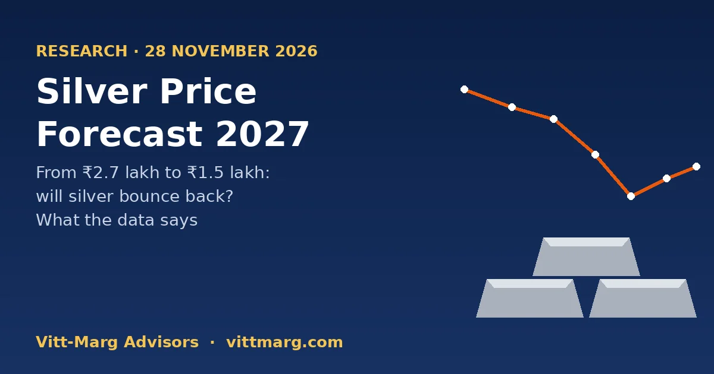
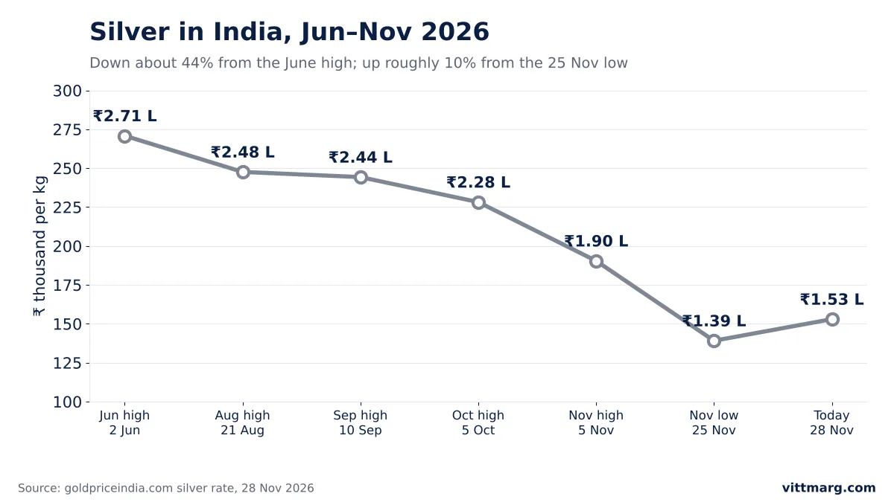
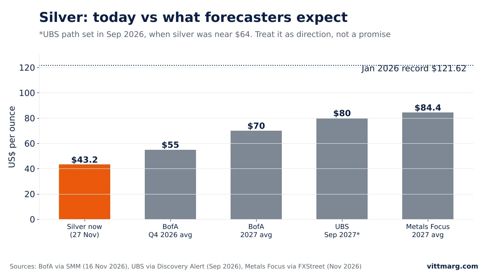

Silver was the star of early 2026. In late January it touched $121.62 an ounce, and in India it crossed ₹2,70,000 per kg in early June. By 25 November it had fallen to about ₹1,39,100 per kg, its lowest in a year, before bouncing to about ₹1,53,000 on 28 November. Anyone who bought near the top is sitting on a loss of more than 40%.
Is silver now cheap, or is there further to fall? The forecasters do not agree, and the reasons they disagree tell you a lot about how silver works.

Why silver fell so hard
Silver usually follows gold, but with bigger swings, because the market is much smaller. This year the same forces that hit gold hit silver harder.
- Rate-hike fears. US inflation rose to 3.8% in October after the oil shock from the Iran conflict, and markets now expect the Federal Reserve to raise rates in December. Metals that pay no interest lose appeal when rates rise.
- Funds sold. Silver-backed exchange-traded funds took in about 8,600 tonnes in 2025, then lost about 1,500 tonnes in 2026, according to Bank of America. Metals Focus puts the fall in fund holdings at about 60 million ounces this year.
- Solar demand weakened. China's solar installations fell by about 129 gigawatts in January to September compared with last year. BloombergNEF cut its 2026 global solar forecast to 584 gigawatts, 10.8% below 2025. Solar panels are one of silver's biggest industrial uses, and makers are also "thrifting", which means using less silver in each panel.
What the forecasters expect

| Forecaster | Forecast | Published | Main reason |
|---|---|---|---|
| Bank of America | $55 average in Q4 2026; $75 in Q2 and Q3 2027; $70 average for 2027 | 16 Nov 2026 | Market swings from a 910-tonne surplus in 2026 to an 852-tonne deficit in 2027; less Middle East risk; fund and solar flows drive prices. |
| Metals Focus | $72.60 average for 2026; $84.40 average for 2027 | Nov 2026 | Price depends on fund buying. Sees a 35.4 million-ounce shortfall in 2026 but a possible 37.3 million-ounce surplus in 2027. |
| UBS | $70 Dec 2026; $75 Mar and Jun 2027; $80 Sep 2027 | Sep 2026 | Set when silver was about $64. Assumes a supportive gold market and electric vehicles taking over from petrol cars as the main car-sector user of silver. |
Notice the dates. The UBS path was set in September, when silver was about $64 an ounce, and silver has since fallen by about a third. Its December 2026 target of $70 already looks out of reach. Bank of America's view, published in mid-November with silver near $49, is the most up to date. Even so, a move from about $43 to $70 would need a rise of more than 60%.
Shortage or surplus? The real debate
For six years silver has been in deficit, meaning the world used more than it mined and recycled. The World Silver Survey 2026 showed a shortfall of 46.3 million ounces for 2026, the sixth year in a row. That shortage was a big part of the case for higher prices.
The picture is now less clear. Metals Focus has since lowered its 2026 shortfall estimate to 35.4 million ounces and expects a small surplus in 2027, mainly because of thrifting in solar panels. It expects industrial demand to fall to 618.2 million ounces in 2027. Bank of America looks at the market differently and still expects a deficit in 2027. Both, however, agree on one point: what moves the price now is investment demand, not factory demand.
What could push silver up
- The Federal Reserve signalling that its December hike is the last one, which would help both gold and silver.
- Investors returning to silver ETFs after this year's outflows.
- Faster growth in electric vehicles and data centres. Bank of America expects data-centre silver use to rise from about 270 tonnes in 2026 to more than 600 tonnes by 2030.
- Gold stabilising. As Bank of America put it, if gold stabilises, silver should have found a base.
What could push it down
- More US rate hikes in 2027, or a stronger dollar.
- Further cuts in silver used per solar panel.
- Another round of selling by funds.
- Higher oil prices keeping inflation high.
What this means for Indian buyers
This is not investment advice. A few points from the research are worth keeping in mind.
- Silver is the riskier of the two metals. It fell about 44% in India this year, against about 24% for gold. If you hold silver, hold an amount you can leave alone for a few years.
- Buy in parts, not in one go. Forecasters disagree on the next few months, so staggering purchases reduces the risk of buying at the wrong moment.
- Silver ETFs are simpler than bars. Physical silver carries 3% GST and dealer spreads when you sell. Silver ETFs and fund-of-funds avoid both.
- Know the tax. Silver ETFs held for more than 12 months, and physical silver held for more than 24 months, are taxed as long-term gains at 12.5%. Read our note on silver tax in India.
For the gold side of the story and the bank forecasts for gold, see our gold and silver price outlook for 2027.
Sources
- India silver rates and monthly highs: goldpriceindia.com, 28 November 2026.
- Record high and UBS forecast path: Discovery Alert, 28 September 2026.
- Bank of America silver outlook, ETF flows, solar and data-centre demand: SMM (Shanghai Metals Market), 19 November 2026.
- Metals Focus forecasts and solar outlook: FXStreet, November 2026.
- MCX and COMEX prices: The Open Press, 28 November 2026. US inflation and Fed odds: Upstox, 26 November 2026.
Frequently asked questions
What is the silver rate in India today, 28 November 2026?
Silver was about ₹1,53,000 per kg on 28 November 2026, before GST. MCX silver settled at ₹1,52,322 per kg on 27 November, up about 4.4% on the day.
Why did silver fall so much in 2026?
Higher US inflation and expectations of a Federal Reserve rate hike, heavy selling by silver ETFs, and weaker solar-panel demand. Silver is a smaller market than gold, so it falls further when investors sell.
What is the silver price forecast for 2027?
Bank of America expects an average of $70 an ounce in 2027 and Metals Focus $84.40, against about $43 at the end of November 2026. UBS set a path to $80 by September 2027, but that was in September 2026 when silver was much higher.
Is there a silver shortage?
Silver has been in deficit for six years, but Metals Focus now expects a small surplus in 2027 because solar panel makers are using less silver. Bank of America still expects a deficit. Both say investment demand will decide the price.
How is silver taxed in India?
Silver ETFs held for more than 12 months and physical silver held for more than 24 months are taxed as long-term capital gains at 12.5%. Shorter holdings are taxed at your income-tax slab rate. Physical silver also carries 3% GST when you buy it.
How Vitt-Marg helps
Vitt-Marg is a CMA-led practice in Noida. We do not sell silver or give investment advice, but we help you work out the tax on selling silver, gold, ETFs and jewellery, and report capital gains correctly in your return.
General information and research, current as of 28 November 2026. This is not investment advice and not a recommendation to buy or sell gold or silver. Vitt-Marg Advisors is not a SEBI-registered investment adviser. Prices move every day and forecasts can be wrong; check current rates and speak to a registered adviser before investing.